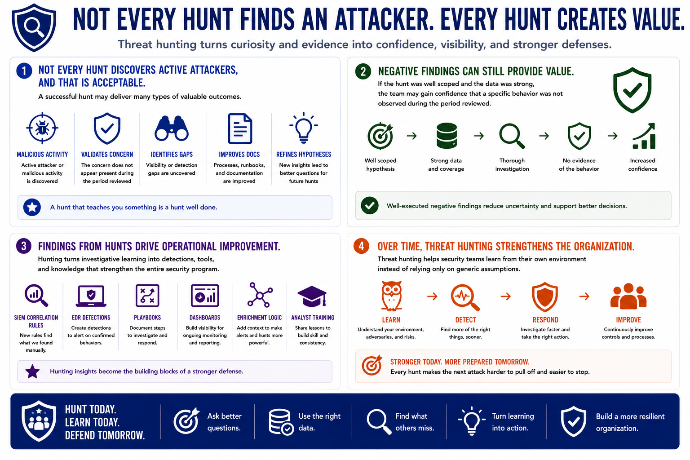

What is Threat Hunting?
Outcomes of Threat Hunting
Connecting to LMS... Progress: in progress
Version 1.0 | Introductory overview of defensive threat hunting practices.

Narration
Not every hunt discovers active attackers, and that is acceptable. A successful hunt may uncover malicious activity, validate that a concern does not currently appear present, identify visibility gaps, improve documentation, or refine future hypotheses.
Negative findings can still provide value. If the hunt was well scoped and the data was strong, the team may gain confidence that a specific behavior was not observed during the period reviewed.
Findings from hunts can become SIEM correlation rules, EDR detections, playbooks, dashboards, enrichment logic, and analyst training materials. Hunting turns investigative learning into operational improvement.
Over time, threat hunting strengthens the organization's ability to detect and respond to future attacks. It helps security teams learn from their own environment instead of relying only on generic assumptions.